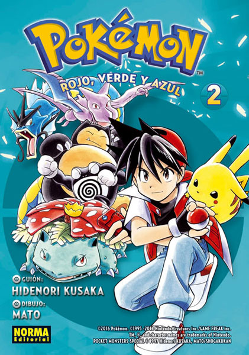
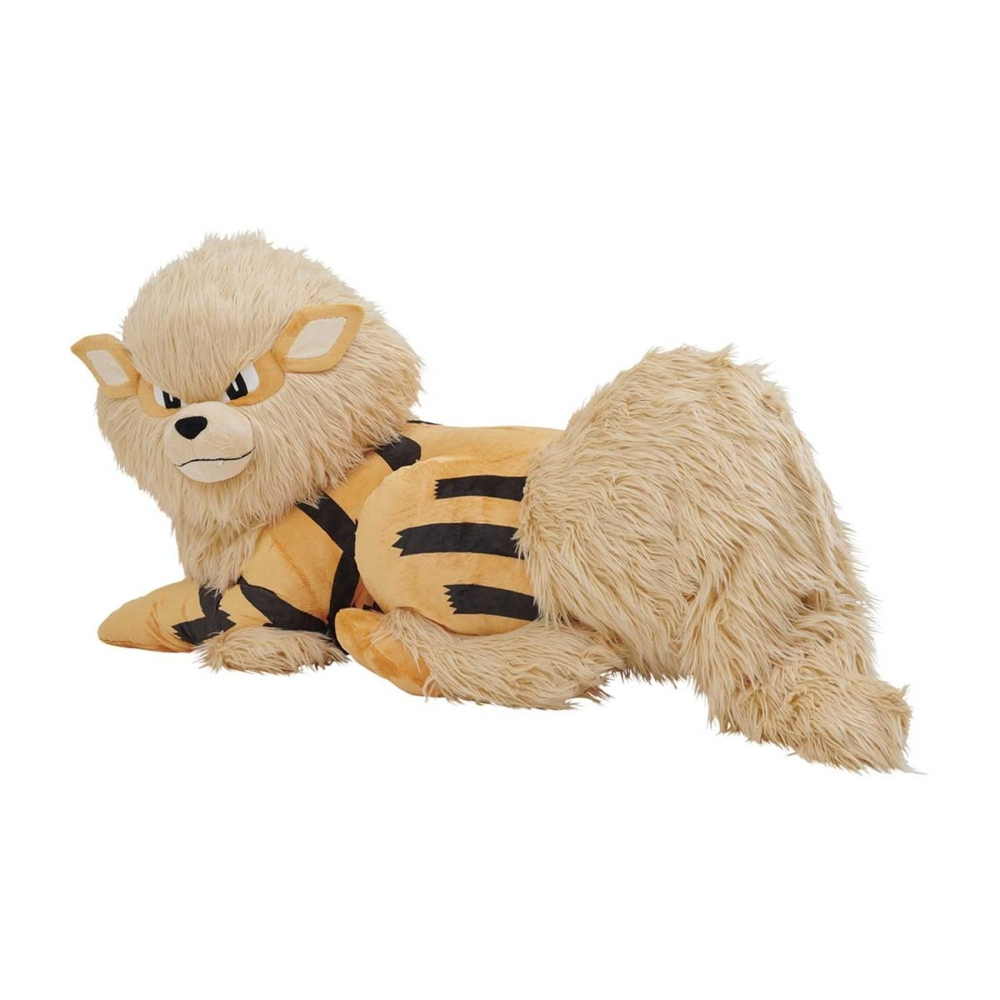

Videojuegos
Dentro de esta categoría, podrás encontrar principalmente los juegos más recientes de la franquicia. Aunque no descartes alguna reliquia.
Echa un ojo. ¿Quién sabe? Puede que te encuentres con alguna sorpresa...
Ver VideojuegosAcabas de acceder a la web más completa del Mundo Pokémon.
Dentro de esta web, encontrarás Videojuegos de la saga, productos del Juego de Cartas Coleccionables, Mangas y Merchandising oficial de la franquicia, algunos de estos incluso traídos de tiendas oficiales japonesas.
También podrás consultar noticias y futuros lanzamientos de Pokémon.
Dentro de esta categoría, podrás encontrar principalmente los juegos más recientes de la franquicia. Aunque no descartes alguna reliquia.
Echa un ojo. ¿Quién sabe? Puede que te encuentres con alguna sorpresa...
Ver VideojuegosEn esta categoría, encontrarás Sobres de Expansión, Cajas de Entrenador Élite (ETB), Barajas preconstruidas...
Juegues o colecciones, adelante. ¡No te cortes y mira sin miedo!
Explorar el JCCPara los que nos gusta conocer las regiones desde perspectivas más maduras, tenemos una gran cantidad de Mangas de la saga.
Los volúmenes son adaptados al español por Norma Editorial, por lo que la traducción es inmejorable. ¿Te animas?
Descubrir MangasPeluches, figuras, llaveros, tazas y mucho más. Muchos de ellos provenientes de Japón.
La experiencia más cercana a un Pokémon Center a un clic. ¿Qué más necesitas?
Ver Merchandising
Pokémon Esmeralda, una de las mejores entregas de la saga y uno de los juegos más queridos por la comunidad. En japonés. Precintada. Una joya de coleccionismo que significa mucho más que un simple videojuego, una región o una consola.
Jamás pensamos que encontraríamos algo así, y supongo que tú tampoco.
Única UnidadPrecio: 1.499,95 €
Ver detalles de Pokémon Esmeralda
La generación que más se ha revalorado con el tiempo, ahora en japonés. La historia de N, la Pokédex Regional más amplia de todas... Para muchos, el mejor juego de la saga para Nintendo DS.
Recordemos la Zona Nexo, ubicada en el centro de la Teselia. De ahí nuestro nombre. La generación céntrica, es la quinta de nueve. No es casualidad. Una de las mejores tiendas siempre debe vender una de las mejores historias de Pokémon.
Colección Especial. No a la venta
Conoce la historia de esta edición
Una de las Cajas de Entrenador Élite más buscadas por el coleccionista moderno, debido a su popularidad y al interés que despiertan sus cartas más especiales.
Cartas como el Ho-Oh de Eco, o el mismísimo Mewtwo del Team Rocket pueden estar esperándote. ¿Sigues dudando?
Stock Limitado - 3 Uds
Precio: 89,99 €
Ver detalles de la ETB Rivales Predestinados
Último volumen de la saga de Kanto, adaptada al manga. En formato de tapa blanda con sobrecubierta.
Durante su viaje, los protagonistas descubren que el Team Rocket está realizando experimentos poco compasivos con Pokémon. ¿Encontrarán la forma de detenerlos?
En Stock - +30 Uds
Precio: 16,95 €
Ver detalles del Volumen
Uno de los peluches más destacados de la actualidad debido a sus dimensiones. 150 centímetros de largo y 70 de alto que busca traer a la vida a uno de los emblemas de Kanto a una escala bastante similar a la del Pokémon con descripción Legendario en la Pokédex.
Si nadie lo quiere, el CEO se lo queda...
1 Unidad Disponible
Precio: 549,95 €
Ver detalles del Peluche¡Los nuevos juegos principales de la saga ya han sido anunciados! Nos muestran a los tres iniciales y una región que parece mezclar la libertad de Pokémon Escarlata con un archipiélago, como en Alola. Estas primeras pinceladas sugieren lo que parece uno de los títulos más ambiciosos de la saga.
Leer noticia completaVuelve una de las Megaevoluciones más queridas al JCC Pokémon. Dominio Delta nos brinda la oportunidad de que, una vez más, descienda de los cielos el dragón que acabó antaño la guerra entre el mar y la tierra. Además, con la nueva mecánica "Estadios Legendarios", podremos combinar dos cartas Estadio para tomar ventaja sobre nuestros oponentes.
Leer noticia completa